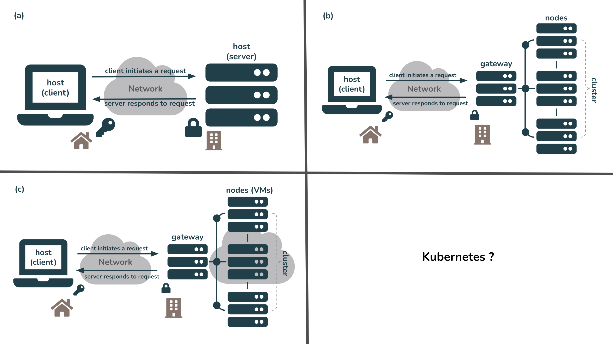

2 Remote Computing
2.1 Learning Objectives
- Understand the basic architecture of computer networks
- Learn how to connect to a remote computer via a shell
- Become familiarized with Bash Shell programming to navigate your computer’s file system, manipulate files and directories, and automate processes
2.2 Introduction
Scientific synthesis and our ability to effectively and efficiently work with big data depends on the use of computers & the internet. Working on a personal computer may be sufficient for many tasks, but as data get larger and analyses more computationally intensive, scientists often find themselves needing more computing resources than they have available locally. Remote computing, or the process of connecting to a computer(s) in another location via a network link is becoming more and more common in overcoming big data challenges.
In this lesson, we’ll learn about the architecture of computer networks and explore some of the different remote computing configurations that you may encounter, we’ll learn how to securely connect to a remote computer via a shell, and we’ll become familiarized with using Bash Shell to efficiently manipulate files and directories. We will begin working in the VS Code IDE (integrated development environment), which is a versatile code editor that supports many different languages.
2.3 Servers & Networking
Host computers connect via networking equipment and can send messages to each other over communication protocols (aka an Internet Protocol, or IP). Host computers can take the role of client or server, though these are not inherent properties of a host (i.e. the same machine can play either role).
- Client: the host intiating a request
- Server: the host responding to a request
Hosts typically have one network address but can have many different ones (for example, adding multiple network cards to a single server increases bandwith).
GET FEEDBACK ON VISUAL + ADD KUBERNETES CONFIGURATION VISUAL; MAKE LARGER? 
Fig 1. Different remote computing configurations. (a) A client uses secure shell protocol (SSH) to login/connect to a server over the internet. The client and the server exist in the physical world, but in different locations. (b) A client uses SSH to login/connect to a computing cluster (i.e. a set of computers (nodes) that work together so that they can be viewed as a single system) over the internet. The connection is first made through a gateway node (i.e. a computer that routes traffic from one network to another). The client and the cluster (server) exist in the physical world, but in different locations. (c) A client uses SSH to login/connect to a computing cluser where each node is a virtual machine (VM) hosted by a cloud computing service (e.g. Amazong Web Services, Google Cloud, Microsoft Azure, etc.). The connection is first made through a gateway node. The client and the gateway are located in the physical world, while the VM nodes are hosted in the cloud.
2.4 IP addressing
Hosts are assigned a unique numerical address used for all communication and routing called an Internet Protocol Address (IP Address). They look something like this: 128.111.220.7. Each IP Address can be used to communicate over various “ports”, which allows multiple applications to communicate with a host without mixing up traffic.
Because IP addresses can be difficult to remember, they are also assigned hostnames, which are handled through the global Domain Name System (DNS). Clients first look up a hostname in the DNS to find the IP address, then open a connection to the IP address.
The IP address for included-crab.nceas.ucsb.edu is _______.
2.5 Bash Shell Programming
What is a shell? From Wikipedia:
“a computer program which exposes an operating system’s services to a human user or other programs. In general, operating system shells use either a command-line interface (CLI) or graphical user interface (GUI), depending on a computer’s role and particular operation.”
What is Bash? Bash, or Bourne-again Shell, is a command line tool (language) commonly used to manipulate files and directories. Accessing and using bash is slightly different depending on what type of machine you work on:
Mac: bash via the Terminal, which comes ready-to-use with all Macs
Windows: bash via Git Bash, which needs to be installed
Mac users may have to switch from Z Shell, or zsh, to bash. Use the command exec bash to switch your default shell to bash (or exec zsh to switch switch back)
Some commonly used (and very helpful) bash commands:
| bash command | what it does |
|---|---|
pwd |
print your current working directory |
cd |
change directory |
ls |
list contents of a directory |
tree |
display the contents of a directory in the form of a tree structure |
mv |
move or rename a file |
touch |
create a new empty file |
mkdir |
create a new directory |
grep |
searches a given file(s) for lines containing a match to a given pattern list |
awk |
|
sed |
stands for Stream Editor; a versatile command for editing files |
cut |
extract a specific portion of text in a file |
join |
join two files based on a key field present in both |
top, htop |
view running processes in a Linux system |
2.6 Connecting to a remote computer via a shell
You can also use a shell to gain accesss to and remotely control other computers (manage/transfer files/etc). To do so, you’ll need the following:
- a remote computer (e.g. server) turned on
- the IP address or name of remote computer
- the necessary permissions to access the remote computer
Secure Shell, or SSH, is a network communication protocol that is often used for securely connecting to and running shell commands on a remote host. SSH temendously simplifies remote computing because ______, and it is supported out-of-the-box on Linux and Macs. If working on a Windows machine, you’ll need ____.
2.7 Exercise 1: Connect to a server & practice bash commands
Let’s connect to a remote computer (a server named included-crab.nceas.ucsb.edu) and practice using some of above commands.
2.7.1 Launch your Terminal Program
MacOS: navigate to
Applications > Utilitiesand openTerminalWindows: Navigate to
Windows Start > Gitand openGit BashUPDATE: see if this still standsALTERNATIVELY, from VS Code: Two options to open a terminal program, if a terminal isn’t already an open pane at the bottom of VS Code
Click on
Terminal > New Terminalin top menu barClick on the
+ (dropdown menu) > bashin the bottom right corner
2.7.2 Connect to a remote server
You can choose to SSH into the server (included-crab.nceas.ucsb.edu) through the command line by using the ssh command, or through VS Code’s command palette. If you prefer the latter, please refer back to the Log in to the server section. Doing so via the command line should look something like this:
#| eval: false
samanthacsik:~$ ssh scsik@included-crab.nceas.ucsb.edu
scsik@included-crab.nceas.ucsb.edu's password:
scsik@included-crab:~$ You won’t see anything appear as you type your password!
DO WE NEED THIS SECTION?
- Change your password
#| eval: false
scsik@included-crab:~$ passwd
Changing password for scsik.
(current) UNIX password:
Enter new UNIX password:
Retype new UNIX password: 2.7.3 Practice
Use the
pwdcommand to print your current location, or working directory. You’ll likely be in your home directory on the server (e.g./home/yourusername).Use the
lscommand to list the contents (any files or subdirectories) of your home directory – you should see a directory named **___**Use the
cdcommand to move the **___** directory:
#| eval: false
# move from /home/yourusername to home/yourusername/____
cd ___To move up a directory level, use two dots, ..:
#| eval: false
# move from /home/yourusername/___ back to /home/yourusername
$ cd ..To quickly navigate back to your home directory from wherever you may be on your computer, use a tilde, ~:
#| eval: false
# e.g. to move from from some subdirectory, /home/yourusername/Projects/project1/data, back to your home directory, home/yourusername
$ cd ~
# or use .. to back out three subdirectories
$ cd ../../..- Create a new directory called, bash_practice within your home directory using
mkdir.
#| eval: false
$ mkdir bash_practiceRun ls to print out the contents of your home directory – you should now see your bash_practice directory added to the list.
- TO BE CONTINUED
2.8 Exercise 2: Write a bash shell script
As we just demonstrated, we can use bash commands in the terminal to accomplish a variety of tasks like navigating our computer’s directories, manipulating/creating/adding files, and much more. However, writing a bash script allows us to gather and save our code for automated execusion.
Earlier, we created a collection of .txt files and saved them to a new directory called bash_practice. Here, we’ll write a bash script to iterate over all those files and update ___.
Let’s begin by creating a simple bash script that when executed, will print out the message, “Hello, World!” This simple script will help us determine whether or not things are working as expected before writing some more complex (and interesting) code.
Open a terminal window and determine where you are by using the
pwdcommand. Navigate to where you’d like to save your bash script (your home directory on the server is fine) by using thecdcommand.Next, we’ll create a shell script called
hello_world.shusing thetouchcommand:
#| eval: false
$ touch hello_world.sh- There are a number of ways to edit a file or script – here, we’ll use Nano, a terminal-based text editor. Open your
hello_world.shwith nano by running the following in your terminal:
#| eval: false
$ nano hello_world.shYou can create and open a file in nano in just one line of code. For example, running nano hello_world.sh is the same as creating the file first using touch hello_world.sh, then opening it with nano using nano hello_world.sh
- We can now start to write our script. Some important considerations:
- Anything following a
#will not be executed as code – these are useful for adding comments to your scripts - The first line of a Bash script starts with a shebang,
#!, followed by a path to the Bash interpreter – this is used to tell the operating system which interpreter to use to parse the rest of the file. There are two ways to use the shebang to set your interpreter (read up on the pros & cons of both methods on this Stack Overflow post):
#| eval: false
# (option a): use the absolute path to the bash binary
#!/bin/bash
# (option b): use the env untility to search for the bash executable in the user's $PATH environmental variable
#!/usr/bin/env bash- We’ll first specify our bash interpreter using the shebang, which indicates the start of our script. Then, we’ll use the
echocommand, which when executed, will print whatever text is passed as an argument. Type the following into your script (which should be opened with nano), then save (Use the keyboard shortcutcontrol+Xto exit, then typeYwhen it asks if you’d like to save your work. Pressenter/returnto exit nano).
#| eval: false
# specify bash as the interpreter
#!/bin/bash
# print "Hello, World!"
$ echo "Hello, World!"- To execute your script, then run the following in your terminal (be sure that you’re in the same working directory as your
hello_world.shfile or specify the file path to it):
#| eval: false
bash hello_world.shIf successful, “Hello, World!” should be printed in your terminal window.
UPDATE: write a simple shell script that does something – e.g. renaming files with bash loop (e.g. change extension, add date, move them around)
UPDATE: nohup, screen, tmux for starting remote job that you can come back to later; look for tmux lesson in oss training